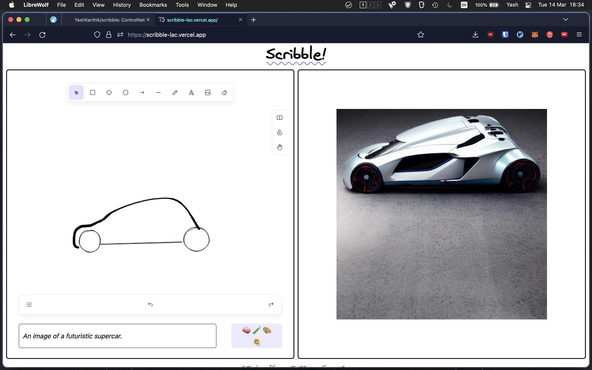

Scribble
MS Paint + stable diffusion
Draw rough sketches on an digital whiteboard and use Stable Diffusion to generate art out of them
Built with Next.js, embeds Excalidraw as a React component for the whiteboard, and uses Stable Diffusion ControlNet on Replicate for generating the image (800+ generations in 5 days).
